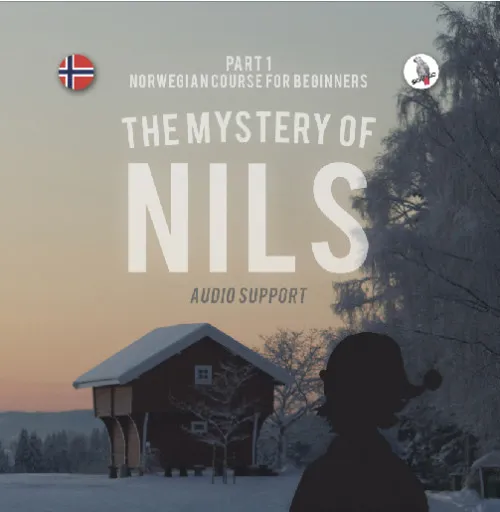

How to pass Norskprøven (A1-B2)
Product profile · Marketplace data 2026-10-14 · Sales-page research 2026-10-14 · Categories: Languages
- How to pass Norskprøven (A1-B2) is a member area and video courses in Languages sold through the Digistore24 marketplace by vendor Skapago, listed since 2023-12-15.
- List price $110.76 (single payment) — checkout, delivery and refunds are handled by Digistore24 itself, not the vendor.
- Buyer protection: the sales page advertises a money-back guarantee — confirm the exact window at checkout.
Interested in How to pass Norskprøven (A1-B2)? The current price, bonuses and guarantee terms live on the vendor's official page:
Check the official sales page
Affiliate link — we may earn a commission at no extra cost to you.
Marketplace record
| Product type | Member area and video courses |
|---|---|
| Price | $110.76 (Single payment) |
| Refund window | Per the vendor's sales page — check the official page before buying |
| Vendor | Skapago (listed since 2023-12-15) |
Vendor's marketplace description
You have studied Norwegian like crazy, and now you are ready to take Norskprøven ? But you're afraid you won't get the result you are hoping for because you ... - ... don't know the exam tasks well enough? - ... don't know how to prepare? Norskprøven is not just about speaking and writing Norwegian well, but it is also crucial to know what exactly you have to do in the exam . Learn all of this in my Norskprøve video course. Here's what awaits you:
From the vendor's sales page
Page title: How to pass "Norskprøven" (A1-B2)
Meta description: Learn exam strategies, avoid common traps, get prepared for Norskprøven!
Headline
How to pass Norskprøven (A1-B2)
Section headlines
- Slik består du Norskprøven (A1-B2)
- Hva sier andre om dette kurset?
- Money-Back Guarantee
Opening copy
We use cookies on our website. Some of them are essential, while others help us improve this website and your experience.
Essential cookies enable basic functions and are necessary for the proper functioning of the website.
How to pass Norskprøven (A1-B2) Understand the exam tasks, learn exam strategies, solve sample questions
Guarantee language found: “60” — always confirm the current terms on the official page before relying on it.
Research method: raw HTML fetch · 1278 words on page · quality: rich · researched 2026-10-14. Full research file (MD) ↗
How products like this are delivered
General note about this product type (not vendor-specific instructions): Video courses live in a members' area: after checkout you receive login credentials by email and can stream the lessons at your own pace, on any device with a browser. For the exact usage of How to pass Norskprøven (A1-B2), the official sales page and included materials are the authoritative source.
More images (from the vendor's sales page)
Images are taken from the vendor's official sales page and belong to the vendor; they show the product as marketed.
Good to know
- Vendor's sales page notes (verbatim, not verified by us): “Yes, you will have access to about 500 example tasks from the written exam, listening comprehension, and reading comprehension, for the levels A1-B2. Please note it takes about 2 working days after you enroll for us to give you access to these example tasks (but you can work with the core of the course right away).”
What is How to pass Norskprøven (A1-B2)?
How to pass Norskprøven (A1-B2) is a member area and video courses in the Languages category of the Digistore24 marketplace, published by vendor Skapago and on sale since 2023-12-15. The vendor describes it as follows: "You have studied Norwegian like crazy, and now you are ready to take Norskprøven ? But you're afraid you won't get the result you are hoping for because you ... - ... don't know the exam tasks well enough? - ... don't know how to prepare? Norskprøven is not ju" (vendor's marketplace description, lightly truncated).
How to pass Norskprøven (A1-B2) pricing: what you will pay
The marketplace lists How to pass Norskprøven (A1-B2) at $110.76 (single payment). Digistore24 adds any tax your country requires at checkout, where you see the final amount before paying. There is no separate marketplace-side fee; vendors may offer their own upsells after checkout.
How to pass Norskprøven (A1-B2) refund policy and money-back guarantee
The sales page advertises: "60" (vendor claim). Refunds for Digistore24 purchases are processed through the platform: request via the support link in your order email, within the vendor's guarantee window shown at checkout. Practical advice: decide inside the window — if the product underdelivers, refund it rather than letting it ride.
Details and mechanics: how Digistore24 refunds work.
Who is How to pass Norskprøven (A1-B2) for?
Based on its Languages classification and single payment pricing, How to pass Norskprøven (A1-B2) targets buyers looking for languages solutions who have budgeted for a premium, high-ticket purchase. The honest test is not the category but your own situation: will you realistically use it within the refund window? If yes, the price is an investment; if not, it is clutter — regardless of quality.
Is How to pass Norskprøven (A1-B2) legit? What to verify before buying
We do not rate legitimacy — nobody can, without using the product. What you can verify, all on this page: the vendor's marketplace history (listed since 2023-12-15), the verbatim sales-page extracts below (labeled vendor claims — their marketing, not our endorsement), the guarantee terms at checkout, and the delivery method. Red flags to check on any offer: pressure countdowns paired with vague refund terms, testimonials without dates, and vendor sites that hide pricing until checkout.
How do you access How to pass Norskprøven (A1-B2) after buying?
Checkout runs on Digistore24. After payment: Video courses live in a members' area: after checkout you receive login credentials by email and can stream the lessons at your own pace, on any device with a browser. Keep your order email — it is your key to the member area and video courses, your refund requests and Digistore24 buyer support.
How to pass Norskprøven (A1-B2) reviews: how to research it properly
Third-party "reviews" of marketplace products are mostly affiliate content — including pages like this one, which earns a commission on purchases. Treat every review (ours included) as a starting point, then verify against primary sources: the vendor's own sales page, the Digistore24 refund policy, and — for languages — independent communities outside the affiliate ecosystem. On this page the sales-page extracts below are quoted verbatim, so you can judge the vendor's claims without clicking away.
How to buy How to pass Norskprøven (A1-B2) safely
- Open the official sales page and read the full offer.
- Confirm the final price and the refund window on the Digistore24 checkout page — that page is binding, not any review.
- Pay inside the Digistore24 checkout (never by bank transfer or off-platform links).
- Save the order confirmation email; note the refund deadline in your calendar.
- Evaluate promptly. Digistore24 buyer support can help if the vendor is unresponsive.
Full research archive for this product (Markdown: complete marketplace record + verbatim sales-page extracts): How to pass Norskprøven (A1-B2) — full data archive (Markdown file: 47344-how-to-pass-norskpr-ven-a1-b2.md).
- Listed price & billing — source: official Digistore24 marketplace API, snapshot 2026-10-14. The checkout page is always the binding source for the current price.
- Sales-page quotes & headline — source: https://courses.skapago.eu/lp/norskproven/, fetched 2026-10-14 (method: raw HTML). Verify: open the official page.
- Guarantee / refund — set by the vendor; confirm on the sales page at purchase time.
- Not verified by us: product quality, outcomes, testimonials — no hands-on test has been performed for this listing.
Frequently asked questions about How to pass Norskprøven (A1-B2)
Answers compiled from the marketplace snapshot (2026-10-14) and vendor sales-page research (2026-10-14); vendor claims are labeled inline.
What is How to pass Norskprøven (A1-B2)?
How to pass Norskprøven (A1-B2) is a member area and video courses sold through the Digistore24 marketplace by vendor Skapago, listed since 2023-12-15. It is filed under Languages. Digistore24 handles checkout, delivery and refunds for this product.
How much does How to pass Norskprøven (A1-B2) cost?
The Digistore24 marketplace lists it at $110.76 (single payment). Prices are set by the vendor and can change — the marketplace record above shows the snapshot; the official sales page shows the current price.
Is there a money-back guarantee for How to pass Norskprøven (A1-B2)?
The vendor's sales page advertises: “60”. The guarantee window is set by the vendor — confirm the current terms on the official page before buying. Digistore24 handles the refund process.
Is How to pass Norskprøven (A1-B2) legit?
We don't rate legitimacy — we publish verifiable data instead: vendor Skapago (listed on Digistore24 since 2023-12-15), listed on the marketplace since 2023-12-15, with its complete sales-page research archived on this page (vendor claims labeled as such). Read our 6-point evaluation method and judge with the facts — or join the discussion about How to pass Norskprøven (A1-B2).
Where can I buy How to pass Norskprøven (A1-B2) safely?
Only through the official sales page linked on this site (checkout and refunds run via Digistore24). Verify the price and guarantee there before ordering. That link is an affiliate link — buying through it supports this site at no extra cost to you.
How do I get How to pass Norskprøven (A1-B2) after paying?
Checkout runs on Digistore24: after payment you receive your access or download by email and in your Digistore24 customer account. Delivery details for this product type: Video courses live in a members' area: after checkout you receive login credentials by email and can stream the lessons at your own pace, on any device with a browser. If anything fails, Digistore24 buyer support can recover your order.
All 50 buyer questions about Languages — the full category FAQ.
Discuss How to pass Norskprøven (A1-B2) on Reddit
Community threads are where real buyers compare notes. We link to communities, not to specific posts — threads move, subreddits stay:
- r/languagelearning — community discussions that often touch languages.
- Search Reddit for "How to pass Norskprøven (A1-B2)" — real-time results, we don't control them.
- Top "review" mentions this year — sort by top, filter by recency yourself.
Related shopping on Amazon
Physical products and gear commonly bought alongside How to pass Norskprøven (A1-B2):
- Shop language learning on Amazon — top results, Amazon's ranking.
- Bestsellers in language learning — live Amazon list, we don't curate it.
Sponsored: as an Amazon Associate, DigistorePicks earns from qualifying purchases (tag adminstore05-20). Amazon sets its own prices and commissions (typically low single digits — far below Digistore24 vendors' 30–75%). We list Amazon as a convenience for physical goods; it is not an alternative to the digital product above.
Related offers in Languages

The American Accent Course helps English learners master pronunciation, rhythm, stress, intonation, and connected speech. Students gain clarity, fluency, and co

ADVANTAGES FOR AFFILIATES - regular income (subscription model) - attractive language course concept that clearly stands out from other offers on the market: No

ADVANTAGES FOR AFFILIATES - regular income (subscription model) - attractive language course concept that clearly stands out from other offers on the market: No

ADVANTAGES FOR AFFILIATES - regular income (subscription model) - attractive language course concept that clearly stands out from other offers on the market: Ge
Other offers by Skapago
Full catalog: Skapago vendor hub — all listings with marketplace data.
ADVANTAGES FOR AFFILIATES - regular income (subscription model) - attractive language course concept that clearly stands out from other offers on the market: No
ADVANTAGES FOR AFFILIATES - regular income (subscription model) - attractive language course concept that clearly stands out from other offers on the market: No
ADVANTAGES FOR AFFILIATES - regular income (subscription model) - attractive language course concept that clearly stands out from other offers on the market: Ge

ADVANTAGES FOR AFFILIATES - regular income (subscription model) - attractive language course concept that clearly stands out from other offers on the market: No
Same vendor on our German site
- Alfred – Schwedischkurs mit einer Geschichte — $234.10 (Languages)
- Mysteriet om Nils – Norwegischkurs für Fortgeschrittene — $234.10 (Languages)
- Nils (Norwegischkurs für Anfänger) Niveau A1/A2 — $303.44 (Languages)
Same vendor, German-language marketplace listings.
Similar price range in Languages
Promote a complete English shadowing course for audiences who want structured listening, pronunciation and speaking practice. English Speak Shadowing Full Cours

LingChat is an AI-powered language learning app that helps users practice 60+ languages with AI and real speaking partners. It is designed for students, travele
A practical video course that teaches non-Koreans the Korean actually used in Korean offices: honorifics, job titles, emails, meetings, phone calls, negotiation
Related searches
Where to check it out
Read the vendor's full sales page (current price, guarantee terms and bonuses are listed there):
View official sales page
That link is an affiliate link — if you buy through it we earn a commission from the vendor at no extra cost to you.
Sources & further information
- Official sales page (current price, guarantee, bonuses): courses.skapago.eu/lp/norskproven/ (affiliate link)
- Public Digistore24 product page: checkout-ds24.com/product/530046
- Full research file (Markdown, versioned): content/products/47344-how-to-pass-norskpr-ven-a1-b2.md
- Marketplace category: Languages
How we evaluate products like How to pass Norskprøven (A1-B2)
Six checks, all on official marketplace numbers — earnings/sale ÷ cancel-rate skepticism × funnel fit. Read the full evaluation method · our research standards & labeling.
Questions, or own experience with How to pass Norskprøven (A1-B2)?
We publish hands-on reviews only after buying a product ourselves — but your experience helps other readers: start or join the discussion about How to pass Norskprøven (A1-B2) on GitHub. Found a wrong number? Report a correction — every page shows its data dates, and corrections are applied to the whole site.